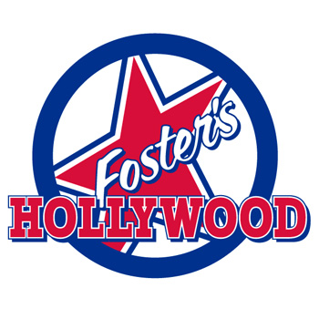
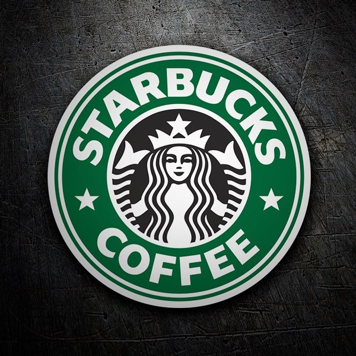

Nuestros Restaurantes
En Intu Xanadú encontrarás una amplia oferta gastronómica para todos los gustos. Desde comida rápida hasta restaurantes gourmet, pasando por cafeterías y opciones saludables. ¡Descubre nuestros espacios de restauración!
VIPS
Planta baja, Local 47
10:00 - 23:00
Americano, Internacional
100 Montaditos
Planta baja, Local 32
12:00 - 00:00
Español, Tapas
Ginos
Planta primera, Local 72
13:00 - 23:30
Italiano, Pasta, Pizza
McDonald's
Planta baja, Local 12
10:00 - 00:00
Fast Food, Hamburguesas

Foster's Hollywood
Planta primera, Local 83
13:00 - 00:30
Americano, Carnes, Tex-Mex

Starbucks
Planta baja, Local 28
09:00 - 22:00
Café, Postres, Snacks